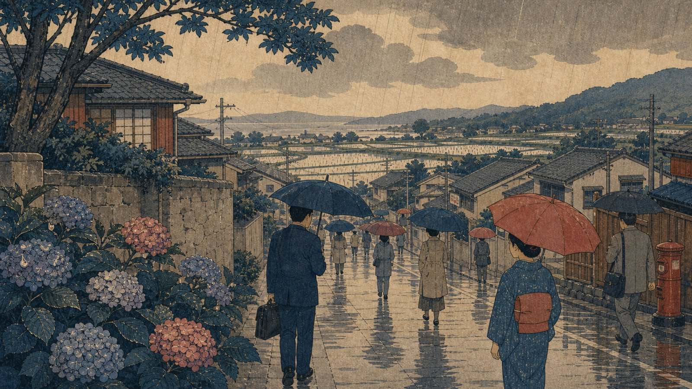

O tsuyu (梅雨), a estação das chuvas, muda o ritmo do Japão antes mesmo de mudar o calendário. Guarda-chuvas aparecem nas entradas, roupas demoram a secar, apartamentos ganham cheiro de umidade e a cidade fica coberta por uma luz baixa, quase leitosa.

A Agência Meteorológica do Japão acompanha o período de baiu, nome meteorológico ligado à frente chuvosa que afeta regiões do arquipélago. Datas de início e fim variam por região e por ano; Okinawa costuma entrar antes, enquanto áreas ao norte têm comportamento diferente.
A chuva como organização da rotina
Para quem mora no Japão, o tsuyu aparece na lavanderia, no transporte, no cuidado com sapatos, no mofo dentro de armários e no tempo gasto em deslocamento. Casas pequenas e apartamentos sem boa ventilação tornam desumidificador, ventilador e produtos antimofo mais importantes do que parecem.
No trabalho, chuva contínua afeta entrega, construção civil, bicicleta, deslocamento para fábrica e chegada à escola. A rotina japonesa absorve isso com uma infraestrutura de guarda-chuvas, capas, lojas de conveniência e previsões muito consultadas.
Melancolia e beleza urbana
O tsuyu também tem dimensão estética. Hortênsias, templos úmidos, ruas refletidas e sons de chuva compõem uma imagem delicada. Mas a romantização precisa conviver com a vida real: calor abafado, roupas molhadas, trens lotados e mofo não são detalhe poético para quem acorda cedo.
Essa mistura revela algo do Japão cotidiano. Há beleza, mas ela não apaga a logística. O país visto de dentro é feito tanto de cerimônia visual quanto de toalha tentando secar no varal interno.
Aviso de atualização
Texto revisado em 10 de agosto de 2026. Datas de tsuyu variam anualmente e por região; consulte a JMA e previsão local antes de planejar viagem, mudança ou atividade externa.